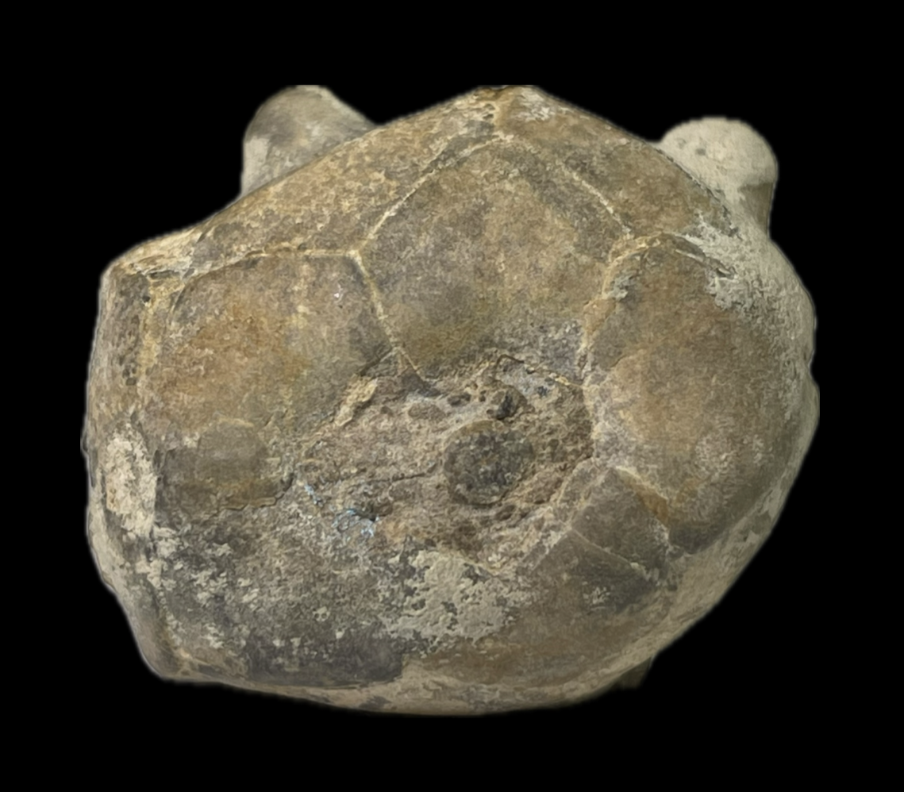
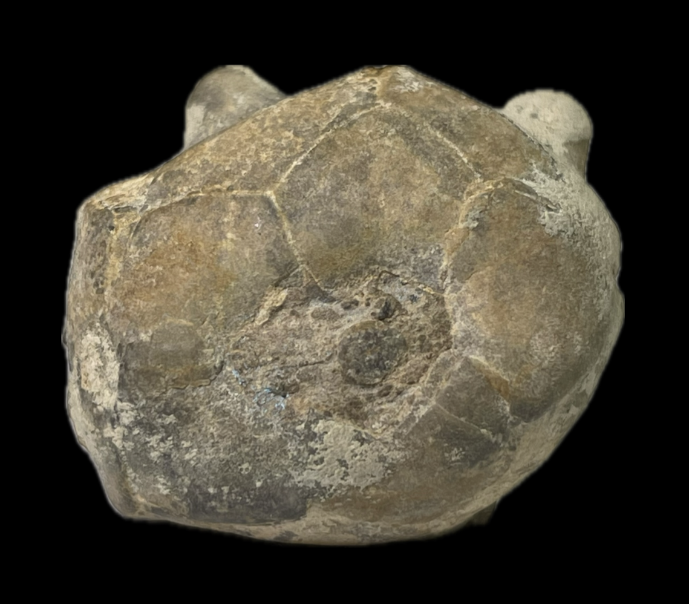

Delocrinus vulgatus
• Pennsylvanian
• Stull Shale, Kanwaka Formation
• Melvern, Osage County, Kansas, USA
Size: 5.5 cm crown
Delocrinus is one of the most prolific and wide-ranging late-Paleozoic crinoid genera found in North America. "Delocrinus vulgatus" is well-described based on material from Nebraska, Kansas and Iowa, and exhibits a fascinating degree of intraspecific and ontogenic variation (Pabian & Strimple 1985). Its axillary primibrachials range from slightly protuded to slightly spinose (with this specimen leaning towards the latter), and this trait is not dictated by the crinoid's maturity. On the other hand, its robust, tapering arms are entirely uniserial in immature specimens and almost entirely biserial in mature ones; the more mature the crinoid, the earlier their biseriality begins. Acquisition of biseriality during growth is a common ontogenic pattern seen in many advanced late-Paleozoic cladids, but this specific pattern of biseriality acquisition is limited to certain genera. This specimen bears two rectangular uniserial secundibrachs, which suggests it is near full maturity.
Typically this species exhibits a single large anal plate between the C and D radials, often contacting the CD basal. This specimen is peculiar in that it completely lacks an anal plate in the cup, only possessing a vestigial plate above the C and D radials. According to Peter Holterhoff, this is an example of "D. vulgatus" that has completely ejected the anal plate out of the cup. Pabian & Strimple 1985 postulated that in any given population of crinoids certain individuals may expel the anal plate in this manner, and noted this to be a rare occurrence for "D. vulgatus". Such intraspecific variability highlights the need to exercise caution when describing a species based on a limited number of specimens

 
